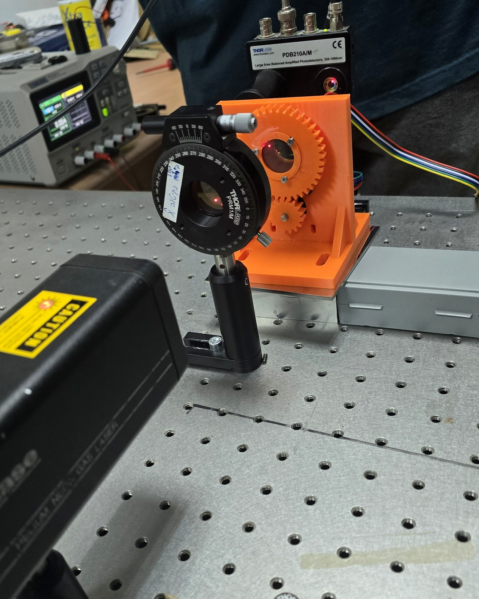
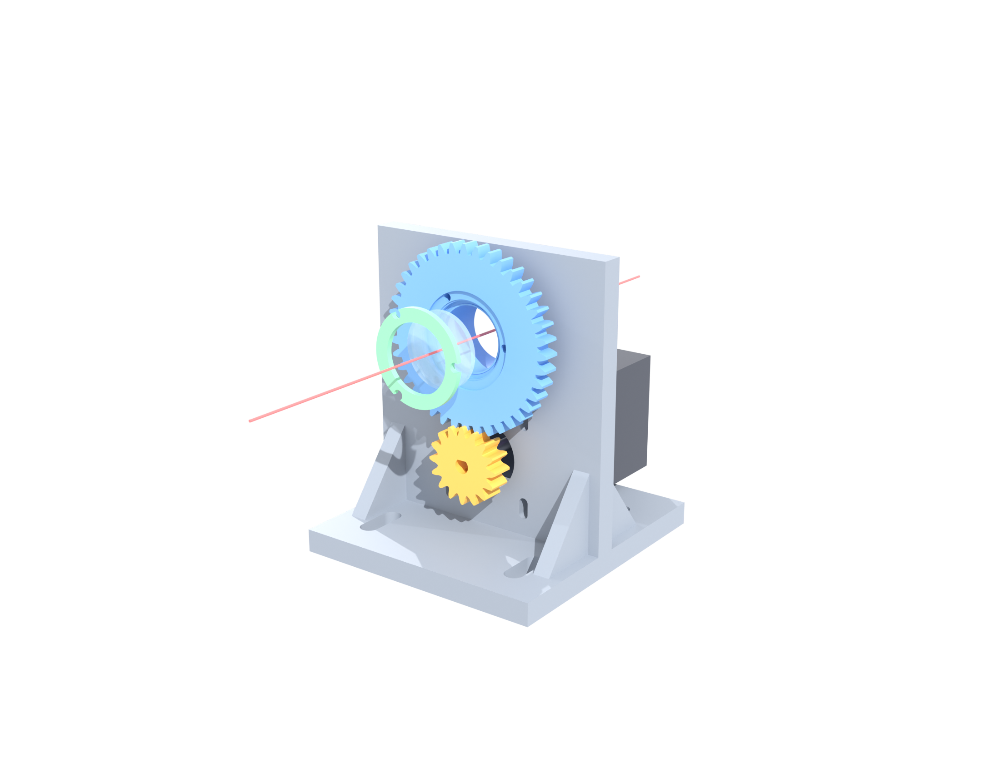
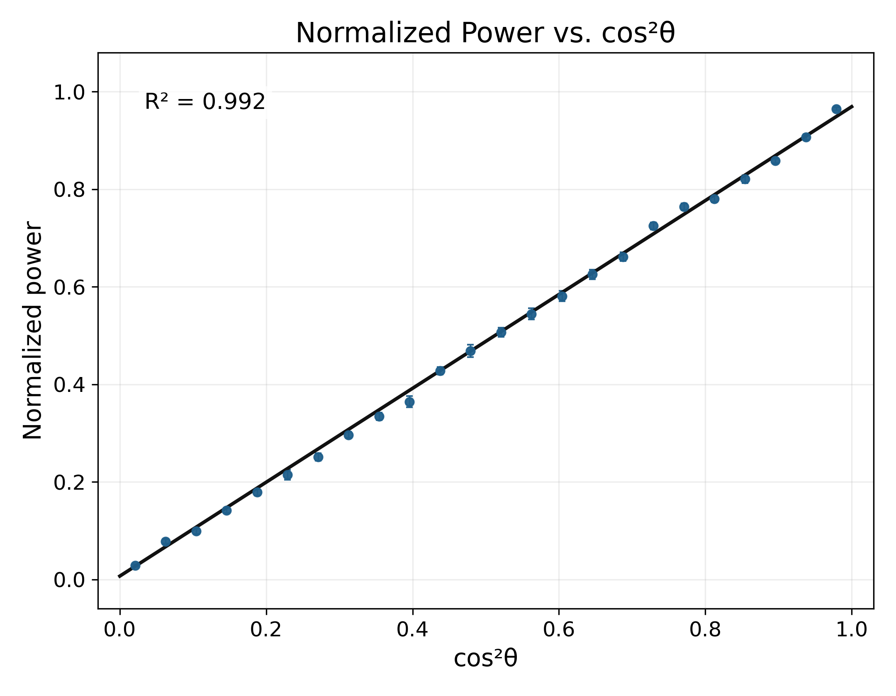
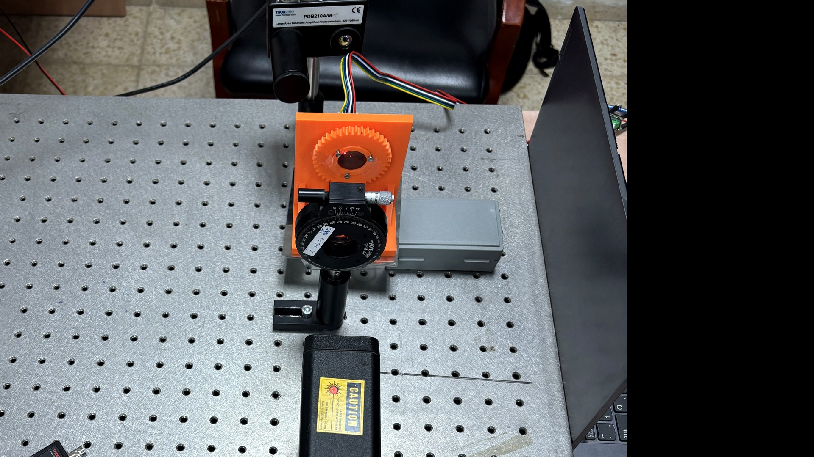

3D-Printed Motorized Polarizer Rotator
A compact lab-built holder for rotating a 1-inch optical polarizer using a NEMA 17 stepper motor, printed gears, and a simple controller.

Purpose
Rotating polarizers are useful in optical measurement systems, especially when measuring intensity as a function of polarization angle. Commercial motorized rotation mounts can be expensive, so we built a simple, flexible, low-cost prototype suitable for our lab measurements.
Mechanical Design
The optical element is held inside a rotating printed holder. A 40-tooth main gear is integrated into the holder and driven by a 16-tooth pinion on the motor shaft. The motor is offset from the optical path so the beam remains unobstructed.
| Main gear | 40 teeth |
|---|---|
| Motor pinion | 16 teeth |
| Gear ratio | 2.5:1 |
| Optic size | 25.0-25.4 mm diameter |
| Clear aperture | about 22 mm |

STL Downloads
Download all files together or choose individual printable parts.
Optical Check
We performed a simple Malus-law check by measuring normalized optical power as a function of the calculated polarizer angle. The result follows the expected trend versus cos²θ.

Simple Assembly
- Print the five main STL parts.
- Insert the rotating holder into the base.
- Attach the back retaining ring so the holder is captured but still rotates freely.
- Mount the NEMA 17 motor and slide the pinion onto the shaft.
- Adjust the motor position until the gears mesh smoothly.
- Insert the optic and secure it with the front retaining ring.
- Connect the stepper driver and run a slow rotation test.
